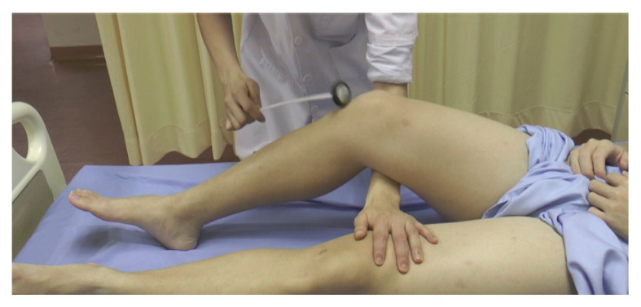

Flácida + arreflexia = 2º NMS → Guillain-Barré
Hipotonia + reflexos abolidos + fraqueza que sobe + LCR com proteína alta e células normais — o que fecha?
Topografar a fraqueza no sistema motor e aplicar o padrão ascendente + liquor para fechar o diagnóstico.
Sindromático antes do nome
O raciocínio começa pela abordagem sindrômica, não pelo nome da doença. Diante de fraqueza, a pergunta topográfica é: primeiro neurônio, segundo neurônio, placa ou músculo?
Flácida + arreflexia = 2º NMS
Reflexo abolido + hipotonia / flacidez → problema no segundo neurônio motor. Portanto, há doença no segundo neurônio motor.
O padrão que fecha Guillain-Barré
Não basta "é 2º neurônio": falta o padrão — começa no membro inferior, sobe para o membro superior, e o LCR mostra hiperproteinorraquia com contagem celular normal.
Fraqueza progressiva ascendente + LCR com hiperproteinorraquia e celular normal = síndrome de Guillain-Barré.
Guillain-Barré é a doença-âncora de 2º neurônio motor puro ascendente da trilha de fraqueza: hidrata a linha "2º NMS" (flácido, arreflexia, hipotonia).
Por que importa na prática: nomear cedo demais sem topografia vira achismo; topografar sem o padrão ascendente+LCR vira "neuropatia genérica".
Resumo operacional: flácida + arreflexia → 2º NMS; + ascendente + LCR 4–40 → Guillain-Barré.

Lin-Wei O, Xian LLS, Shen VTW, et al. Malays J Med Sci. 2021;28(2):48–62 · CC BY 4.0 · fonte
O reflexo que localiza a lesão
O reflexo abolido não é um detalhe — é a assinatura do 2º neurônio motor. Enquanto o 1º NMS cursa com hiperreflexia e espasticidade, o 2º NMS entrega flacidez e arreflexia. O martelo no tendão patelar que não encontra resposta é o dado que tira o raciocínio do córtex e o coloca no nervo periférico.
O nome longo da doença — poli · radículo · desmielinizante · aguda — empacota o mecanismo.
Quiz
Q1. Reflexos abolidos + hipotonia/flacidez apontam prioritariamente para:
Q2. O que fecha Guillain-Barré além de "é 2º neurônio"?
Q3. Na trilha de fraqueza, Guillain-Barré hidrata especialmente a linha: